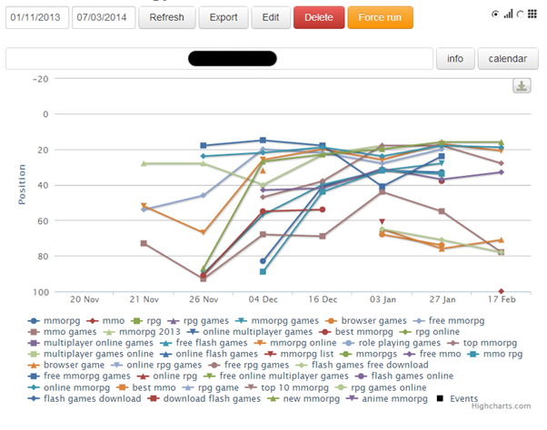

The company I prepared this plan for is shifting from a domain to another on all its domains and subdomains. The plan draws from a number of SEO sources and websites, and it is currently being implemented.
In specific:
1) The main domain is being migrated to a new website
2) All subdomains’ URLs (more than 30 subdomains) are being migrated to new subdomains’ URLs
As an SEO consultant and coordinator for the company, I conceived the following SEO Migration Strategy
Rationale
• SEOs planning is needed to make sure traffic loss will be kept to a minimum.
• Avoid 404 (File Not Found) errors, that can harm the user experience and negatively impact the site's performance in Google search results.
Phase 1: Establishing Objectives, Effort & Targets
Objectives of the SEO Plan
• Minimum traffic loss
• Minimum ranking drops
• Key rankings maintenance
• Head traffic maintenance
Estimate Time and Effort
• Identify websites that will be merged (domians) and redirected (subdomains)
• Find the ideal time: the migration shouldn't take place during busy times for the business
• Establish whether we are we changing website domains and/or IP addresses
Phase 2: Actions on the Legacy Site
• Crawl the Legacy Site: crawl the legacy site with a crawling application (e.g. Xenu Link Sleuth, Screaming Frog) in order to identify and report redirects
• Export Top Pages: export all URLs that have received inbound links. The site's liks juice contributes to the site’s ability to rank well in the SERPs
• Export 404 pages: These can be exported directly from Webmaster Tools under Diagnostics->Crawl Errors. Ideally each URL should be redirected to the most relevant page.
• Measure rankings: save rankings reports for the most important keywords (we implemented Serposcope for ranking tracking) in order to compare the ranking of the legacy site with the one of the new site.
The websites ranking is being monitored though Serposcope

• Find keywords driving traffic in Google Webmaster and make a list of site ranking for those keywords . Compare site ranking for the same keywords after migration (or use Advanced Web Ranking)
• List your inbound links: Make a list incoming internal and external links. Identify site authority of inbound external links and add them in a CSV sheet.
(Use Google webmaster or Open Site Explorer and Majestic SEO for detailed reports)
Phase 3: URL Redirecting Mapping
During this phase, pages (URLs) of the legacy site need to be mapped to pages (URLs) on the new site. The main principle is that ALL unique, useful or authoritative pages (URLs) of the legacy site should redirect to pages with the same or very relevant content on the new site, using 301 redirects.
Phase 4: New Site on test Server
• Block Crawler Access: make sure that the test environment is not accessible to any search engine crawler: eg. password-protect the test environment or allow access to certain IP addresses
• Prepare a Robot.txt File
• Prepare an Xml sitemap(s)
• Prepare Html Sitemap: Implementing an HTML sitemap could help search engine spiders make a deep crawl of the site. The sooner the new URLs get crawled, the better.
• Fix Broken Links: Run the crawler application to find internal/external broken links, 302 redirects, or other issues.
• Check 301 redirects: All URLs to be redirected should be checked.
• Optimize redirects: If time allows, the list of redirects needs to be optimised for optimal performance. A high number of redirects can have a negative impact on performance. The shorter the list, the quicker the web server will respond.
• Robot.txt Monitoring: Make sure the URL of the new site is monitored using a service like Uptime Robot or Robotto
• Resolve Duplicate Content Issue.
[Read more]
Perform URL normalisation to allow optimal site crawling, as search engines will come across as many unique pages as possible.
URL normalization cases include:
• Directories with and without a trailing slash
• Default directory indexes
• Case in URLs
• Different protocols. The most typical example is when a website is accessible via http and https.
• Accessible IP addresses. Being able to access a website by requesting its IP address can cause duplicate content issues
• URLs on different host domains e.g. www.examplesite.com and examplesite.com
• Internal search generating duplicate pages under different URLs.
• URLs with added parameters after the ? character.
In all the above examples, poor URL normalisation results in duplicate pages that will have a negative impact on:
• Crawl bandwidth (search engine crawlers will be crawling redundant pages).
• Indexation (as search engines try to remove duplicate pages from their indexes).
• Link equity (as it will be diluted amongst the duplicate pages).
Phase 5: New Site goes Live
The new pages and URLs will be updated in the SERPs over a period of time, which typically can take from two to four weeks. If some pages take long to get indexed it may be worth using a ping service like Pingler.
• Notify Google via Webmaster Tools: If the domain name changes, you need to notify Google via the Webmaster Tools account of the old site, as soon as the new site goes live. In order to do that, the new domain needs to be added and verified. If the domain name remains the same, Google will find its way to the new URLs sooner or later.
• Manual Checks
[Read more]
Run the crawler application again and pay attention for:
• Anomalies in the robots.txt file
• Meta robots noindex tags in the head section of the HTML source code
• Meta robots nofollow tags in the source code
• 302 redirects. 301 redirects should be used instead as 302s are treated inconsistently by search engines and do not pass link equity
• Check Webmaster Tools for errors messages
• Check XML sitemap for errors (e.g. broken links, internal 301s)
• Check HTML sitemap for similar errors (e.g. using Simple Links Counter or Check My Links)
• Missing or not properly migrated page titles
• Missing or not properly migrated meta descriptions
• Make sure that the 404 page returns a 404 server response
• Make sure the analytics tracking code is present on all pages and is tracking correctly
• Measure new site performance and compare it with that of the previous site
• Monitor Crawl Errors with Google Webmaster tools, Bing Webmaster Tools and Yandex Webmaster
• Update Most Valuable Inbound links
[Read more]
• From the list of imbound links created during Phase 2, figure out which are the most valuable inbound links (using Majestic or OSE data) and then try to contact the web masters of those sites, requesting a URL update. Direct links pass more value than 301 redirects and this time-consuming task will eventually pay back.
• On the new site, check the inbound links and top pages tabs of OSE and try to identify new opportunities such as:
1. Links from high authority sites which are being redirected.
2. High authority 404 pages which should be redirected so the link juice flows to the site.
• Build Fresh Links: Generating new, fresh links to the homepage, category and sub-category pages is a good idea to compensate for link juice that got lost during the migration.
• Eliminate 301 Redirects: Depending on the volume and frequency of internal 301 redirects, some link juice may evaporate, whilst the redirects will unnecessarily add an extra load to the web server. Again, in order to detect internal 301 redirects, crawling the site would be handy.
Phase 6: Measure Impact/Success
Once the new site gas finally gone live, the impact of all the previous hard work needs to be monitored. In general no conclusions should be made earlier than 3-4 weeks.
Things to be looking at:
• Indexation: submitted and indexed number of URLs reported by Webmaster Tools
• Rankings: They usually fluctuate for 1-3 weeks and initially they may drop. Eventually, they should recover around the same positions they were previously.
• Google cache: Check the timestamps of cached pages for different page types e.g. homepage, category pages, product pages.
• Site performance in Webmaster Tools: This one may take a few weeks until it gets updated but it is very useful to know how Google perceives site performance before and after the migration.
• Check the Sitemap Details page lets you see how many URLs in your Sitemap Google have crawled and indexed.
Sources
http://moz.com/blog/achieving-an-seo-friendly-domain-migration-the-infographic
http://seogadget.com/surviving-seo-site-migration/
http://moz.com/learn/seo/redirection
http://seogadget.com/domain-migration/
http://seogadget.com/search-engine-visibility/
http://googlewebmastercentral.blogspot.ie/2008/04/best-practices-when-moving-your-site.html
https://support.google.com/webmasters/answer/83105?hl=en&ctx=cb&src=cb&cbid=-7idxrt93yqtb&cbrank=0
http://searchenginewatch.com/article/2067216/The-10-Step-Site-Migration-Process
http://www.toprankblog.com/2012/02/seo-migration-plan/
http://moz.com/blog/web-site-migration-guide-tips-for-seos
https://support.google.com/webmasters/answer/83106?hl=en